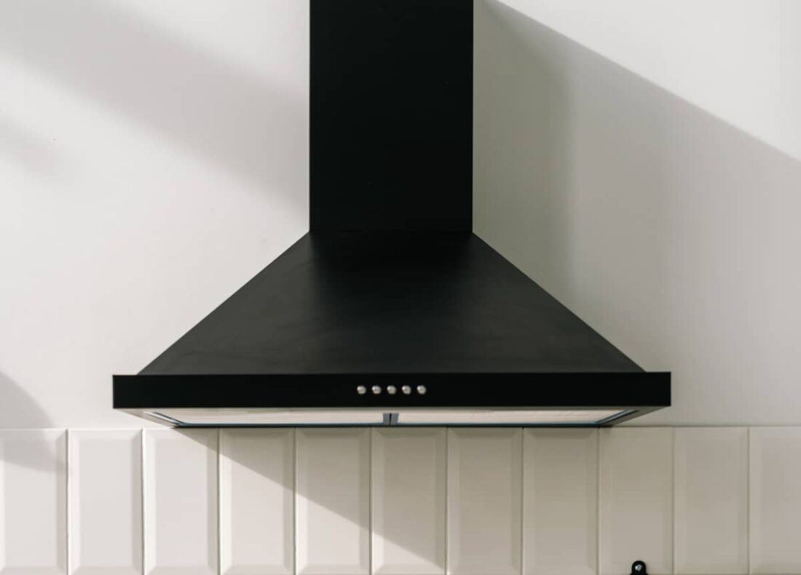

Campanas extractoras
Las campanas extractoras son un componente esencial en cualquier cocina, ya que ayudan a mantener el aire limpio y fresco al eliminar los olores, el humo, el vapor y la grasa producidos durante la cocción.
Las campanas extractoras funcionan aspirando el aire contaminado generado durante la cocción y extrayéndolo del área de la cocina a través de un conducto de ventilación.
Es importante elegir una campana con suficiente capacidad de extracción para la cocina en la que se va a instalar, teniendo en cuenta el tamaño de la cocina y el tipo de cocción que se realiza.
La mayoría de las campanas extractoras tienen varios niveles de velocidad que permiten ajustar la potencia de extracción según las necesidades de cocción.
Muchas campanas extractoras vienen con luces integradas que iluminan la superficie de cocción, lo que facilita la preparación de alimentos.
